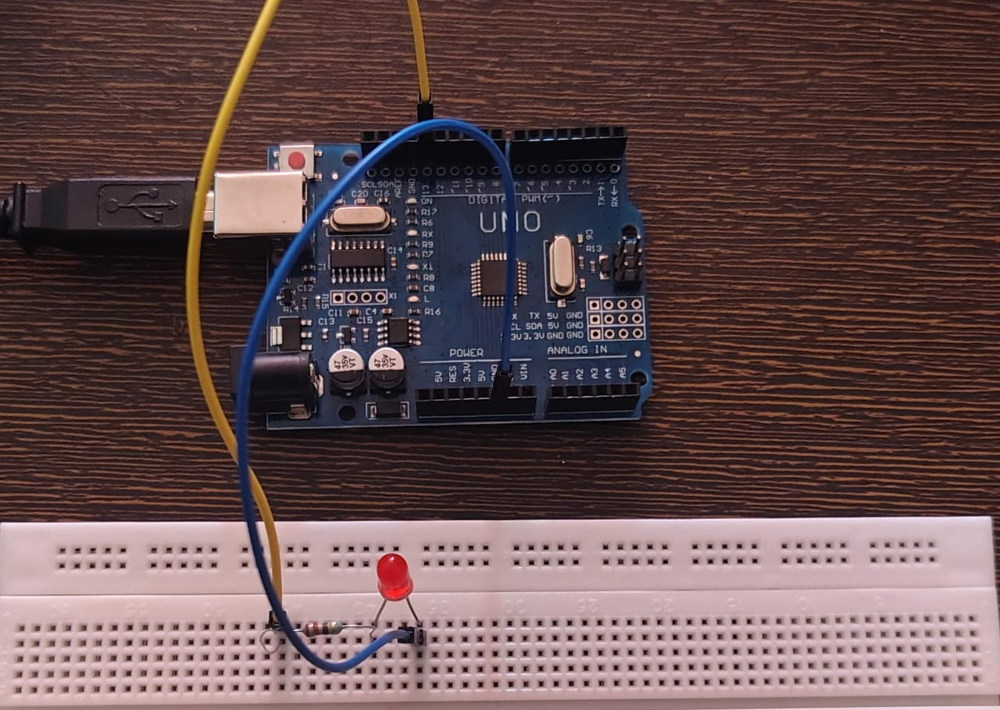
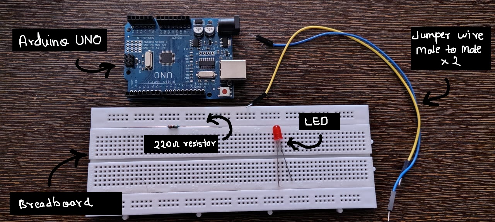
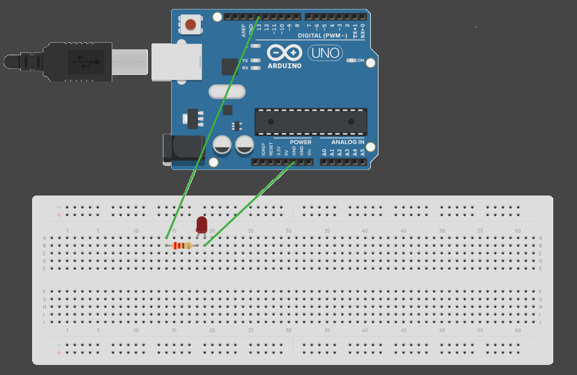

Chapter 4
So in the last post, we successfully set up our Arduino IDE and ran the example Blink program.
In this post, we’ll first understand what that code actually does, and then build a real circuit to implement the same logic ourselves.
💡Understanding the Blink
Quick Recap
Blink Program
void setup() {
pinMode(LED_BUILTIN, OUTPUT);
}
void loop() {
digitalWrite(LED_BUILTIN, HIGH);
delay(1000);
digitalWrite(LED_BUILTIN, LOW);
delay(1000);
}
What Did It Do?
The built-in LED on the Arduino board started blinking — ON for 1 second, OFF for 1 second, repeatedly.
Simple to observe, but there’s a lot happening behind the scenes.
Code Logic Simplified
Void Setup
This block runs exactly once when the Arduino starts.
It is used to:
set pin modes
initialize variables and constants
prepare the board before the main program runs
Now look at this line:
pinMode(LED_BUILTIN, OUTPUT);
This tells the Arduino that the pin connected to the built-in LED should act as an output — meaning it will provide voltage/current to a component.
For now, the LED is already mounted on the board, which might feel a bit abstract. Don’t worry — we’ll remove that abstraction soon.

Void Loop
This block runs again and again, endlessly.
Whatever code you place here will repeat continuously — useful for blinking LEDs, rotating motors, reading sensors, etc.
digitalWrite(LED_BUILTIN, HIGH);This sets the LED pin to HIGH, meaning it outputs 5V.
As a result, the LED turns ON.
delay(1000);This pauses the program for 1000 milliseconds (1 second).
During this time, the LED stays ON.
digitalWrite(LED_BUILTIN, LOW);This sets the pin to LOW, meaning 0V output.
The LED turns OFF.
delay(1000);The OFF state is also held for 1 second.
After this, the loop() function starts again, creating the blinking pattern.
🚨Creating A Blinking LED Circuit
What we'll do?
Now that we understand the idea, let’s build the same thing ourselves using an external LED.
This is where the concepts of pins, voltage, and output start making real sense.
Components Required
- Breadbord
- Jumper Wires
- LED (red preffered)
- 220 ohm resistor (MUST!)
- ofc Arduino UNO
Circuit Diagram
Arduino pin 13 --> Resistor --> LED --> Arduino GND
Connect the components exactly in this order.
Make sure the LED polarity is correct.
Longer side (+) Anode connected to source side.
Shorter side (-) Cathode connected to ground.
Code
Upload the following code to your Arduino:
void setup() {
pinMode(13, OUTPUT);
}
void loop() {
digitalWrite(13, HIGH);
delay(1000);
digitalWrite(13, LOW);
delay(1000);
}
As you can observe, this is the same code as before.
The only change is replacing LED_BUILTIN with pin 13, where our external LED is connected.
Compile and upload the code.
Result
Live demo of Blink Circuit.
You should now see the external LED blinking, exactly the same way the onboard LED did in the previous post.
At this point, code is no longer abstract — it is directly controlling a real circuit.
✨Reflections
We can now clearly understand the concept of pins and digital output.
What the code is doing:
Pin 13 is set as an output
The pin alternates between HIGH (5V) and LOW (0V)
Each state is held for 1 second using delay()
Key Takeaways
Arduino has pins that act as output interfaces
Output pins can be set HIGH or LOW using digitalWrite()
HIGH/LOW logic works like an ON/OFF switch
delay() controls how long a state is maintained
Don’t pressure yourself to understand everything immediately.
As we move forward and build more examples, these ideas will connect naturally.
This is exactly how I learned it — step by step.
❗Important Concepts
Why Is the Resistor a MUST?
An LED is a fragile device.
If the current through it exceeds its limit, it can burn instantly.
Connecting an LED directly to 5V causes excessive current flow, which can damage:
the LED
the Arduino pin
A resistor limits the current and protects the circuit.
This is your first lesson in circuit protection — and yes, I learned it after burning a few LEDs.
Why 220 Ω?
Most LEDs operate safely at 10–20 mA.
Using Ohm’s Law, 220 Ω is a safe lower limit for 5V operation.
Do not go below this, especially for blue or white LEDs.
And yes! The onboard LED already includes a built-in resistor.
Did you look closely?
If you did, you might have noticed the onboard LED was also blinking this whole time along with the external LED. Why? because that LED is connected to none other than pin 13. In short, BUILTIN_LED is the other name of pin 13. The pin 13 which you connected is internally also connected with the onboard LED!
Other Precautions?
Never connect 5V directly to GND
Be careful with pins set to HIGH (they output 5V)
Always check LED polarity before powering the circuit
These small checks prevent big mistakes.
What’s Next
Now that we’ve built and seen digital output in action, we’re ready to properly understand:
What HIGH and LOW really mean electrically.
That’s exactly what we’ll cover in the next.